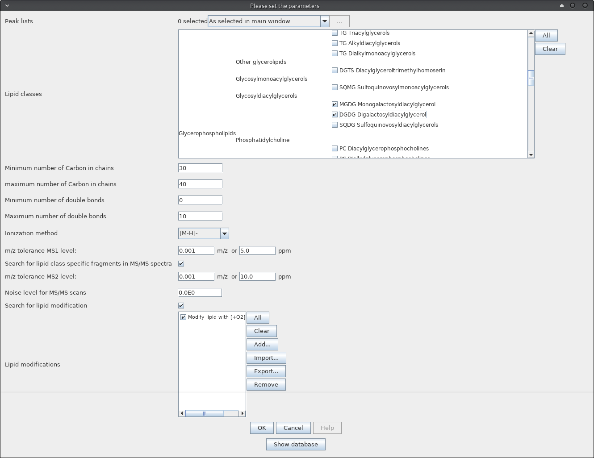

Lipid Annotation
Disclaimer
If you use the Lipid Annotation Module, please cite the MZmine paper and the following article:
Korf, A., Jeck, V., Schmid, R., Helmer, P. O., & Hayen, H. (2019). Lipid Species Annotation at Double Bond
Position Level with Custom Databases by Extension of the MZmine Open-Source Software Package. Analytical chemistry, 91(8), 5098-5105.
MS/MS rules were derived from various sources listed below or from MS/MS experiments performed in the Hayen lab (University of Münster, Germany)
LipidBlast
Kind, T., Liu, K. H., Lee, D. Y., DeFelice, B., Meissen, J. K., & Fiehn, O. (2013). LipidBlast in silico tandem mass spectrometry database for lipid identification. Nature methods, 10(8), 755.
MoNA
https://mona.fiehnlab.ucdavis.edu/
LipidMatch
Koelmel, J. P. et al. (2017). LipidMatch: an automated workflow for rule-based lipid identification using untargeted high-resolution tandem mass spectrometry data. BMC bioinformatics, 18(1), 331.
Description
This module holds methods to search for lipids in peak lists. Potential lipids will be
annotated according to there accurate mass on MS1 level. If MS/MS data is available an
identification on fatty acid residue level is also possible.
Method parameters
- Lipid classes
- Selection of lipid classes to consider for annotation. Lipid classes are classified in
three groups. From left to right: Lipid core class, lipid main class and lipid class. Simply
check the classes to consider for annotation. More classes can be added as desired
(contact "ansgar.korf@wwu.de" or write an issue at the MZmine homepage).
- Minimum number of carbon in chains
- Set the minimum number of carbon in chains
- Maximum number of carbon in chains
- Set the maximum number of carbon in chains
- Minimum number of double bonds
- Set the minimum number of double bonds in chain
- Maximum number of double bonds
- Set the maximum number of double bonds in chains
- m/z tolerance MS1 level
- Enter m/z tolerance for exact mass database matching on MS1 level
- Ionization method
- Type of ion used to calculate the ionized mass
- Search for lipid class specific fragments in MS/MS spectra
- Check if you want to search for lipid class specific fragments in MS/MS spectra.
To see which lipid class has a MS/MS library check out the database table.
- m/z tolerance MS2 level
- Enter m/z tolerance for exact mass database matching on MS2 level
- Noise level for MS/MS scans
- Intensities less than this value are interpreted as noise
- Search for lipid modification
- If checked the user can add masses to all selected lipids. Click "Add" button
on the right and enter "+" plus any sum formula, and/or "-" plus any sum formula. Example:
"+O2-H". Numbers have to be entered AFTER the element. This feature allows the user
to build any possible lipid, based on the already implemented lipids. This also allows
the annotation of lipid derivatization products. Entered modifications can be exported
and/or imported using the buttons on the right side.

Database table
- By clicking the button "Show database" at the bottom of the window, the user can browse through
a database table which holds a lot of information of the created lipid database. All lipids are displayed
in two Kendrick mass plots (KMD CH2 left, KMD H right). Lipids that interfere in the selcted m/z window are
marked yellow, isobaric lipids are marked red. The others are displayed green.

Results
- Peaks will be annotated as potential lipids by setting its peak identity. Always check for multiple assignments
and compare the status with the database table and Kendrick plots! The comment holds information on the utilized ionization
method, mass accuracy and MS/MS annotation. An MS/MS annotation will be added if MS/MS data was acquired and fragmentation information is
listed in the database. More MS/MS data will be added in the future. If you have data on lipid class specific fragmentation
you can contact "ansgar.korf@wwu.de" or write an issue at the MZmine homepage. The information can then possibly be added.